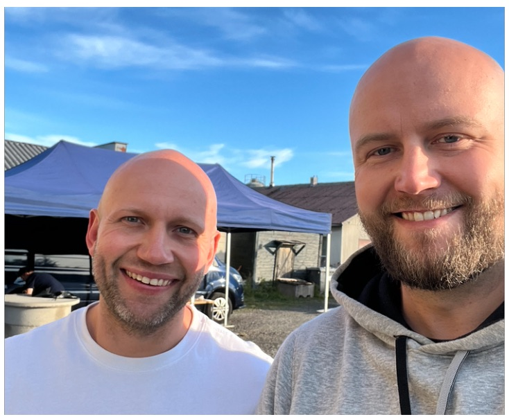

Hailer on prosessialusta, joka yhdistää työnkulut, projektit ja viestinnän yhteen paikkaan. Asiakkaan prosessit ohjaavat järjestelmää, ei toisin päin. Lue miten organisaatiot ympäri Suomen ovat kehittäneet toimintaansa Hailerin avulla.

Organisaatioita ympäri Suomen, vuodesta toiseen.
Lauste on yksityinen, voittoa tavoittelematon lastensuojelupalveluiden asiantuntija — yli 200 ammattilaista, toimipisteet Turussa ja Uudessakaupungissa, 27 palvelukuntaa Varsinais-Suomessa. Hailer rakennettiin räätälöitynä työtilana, jossa hallinnoidaan kaikkia sisäisiä tukitoimintoja: huolto- ja palvelupyynnöt, IT-asiat, tietoturvapoikkeamat ja lääkepoikkeamat kulkevat saman järjestelmän kautta — lomakkeelta käsittelyyn ja seurantaan. Asiakkaana vuodesta 2020.
Vuonna 2005 perustettu henkilöstöpalvelukonserni — Joblink henkilöstövuokraus, Joblink Hyllytys Oy ja Joblink Myymäläpalvelut Oy — liikevaihto noin 27,2 milj. € (2025). Toimisto koordinoi satoja vuokratyöntekijöitä ympäri Suomen kellon ympäri. Haileriin rakennettiin työnkulkuja henkilöstöprosesseille, asiakkuuksien hallintaan ja tehtävien seurantaan — kaikki tärkeä tieto yhdessä paikassa, oikeassa kontekstissa. Yksi Hailerin vanhimmista ja nopeimmin kasvaneista asiakkaista vuodesta 2016.
Finndent Oy suunnittelee ja rakentaa hammaslääkärituolikokonaisuuksia Euroopan markkinoille — juuret 1970-luvulla. Kuuluu Genera-konserniin (liikevaihto n. 18 milj. €). Hailerissa konserni yhdisti eri juridisten yksiköiden — Genera Oy, Finndent Oy ja Finndent Suomi Oy — myynninhallinnan yhdelle alustalle: samat asiakkuudet, sama tieto, saumaton yhteistyö yli yritysrajojen. Käytössä vuodesta 2017.
Vuonna 1989 perustettu tukkukaupan palveluyritys Kokkolasta — maahantuo ja myy yli 20 tuotemerkkiä metsästykseen, ampumaurheiluun ja vapaa-aikaan. Haileriin rakennettiin kahdeksan työnkulkua kattamaan myynti, toimitukset ja hallinto. Toimitusjohtaja Kai Helisten tiivistää: "Hailer tuo rakenteen toimintaan. Kaikki sisäinen viestintä on nyt paikallaan, ja johto saa hyvän kokonaiskuvan koko organisaatiosta yhdellä silmäyksellä." Asiakkaana vuodesta 2018.
Porvoon Kodintekniikka Oy operoi Gigantti-myymälöitä Porvoossa, Salossa, Järvenpäässä ja Lohjalla. B2B-myyntitiimin asiakkuuksien hallinta vaati oman ratkaisun: Hailer räätälöitiin asiakkuuksien seurantaan, myyntiprosesseihin ja tiimin yhteistyöhön — kevyt ja käytännöllinen, sopii erikokoisen jälleenmyyjäorganisaation arkeen ilman ylimääräistä monimutkaisuutta. Asiakkuus alkanut 2022.
Vuonna 2019 perustettu lakitoimisto, erikoistunut yksityisyrittäjiin, kuluttajaoikeuteen ja autoalan juridisiin kysymyksiin. Aloitti Hailerin freemium-pohjalta suoraan luottokorttimaksulla — juuri sellainen matala kynnys, joka sopii kasvavalle pienyritykselle. Toimisto on kasvanut 2 henkilöstä 5:een ja liikevaihto lähes kolminkertaistunut yhteistyön alusta. Liikevaihto 2025: 445 000 € (+33,3 %). Asiakkaana vuodesta 2021.
Hailer on prosessialusta, joka yhdistää työnkulut, projektit ja viestinnän yhteen paikkaan. Ei erillisiä järjestelmiä eikä raskasta IT-projektia.
Asiakkaan prosessit ohjaavat järjestelmää, ei toisin päin. Kuvauksen tekee se, joka työn tuntee — Hailer Studio, sisäinen tekoäly, rakentaa siitä ensimmäisen version minuuteissa. Työnkulut, kentät ja näkymät muokataan ilman koodaamista, ja muutokset tehdään silloin kun toiminta muuttuu — ei seuraavassa järjestelmähankkeessa.
Hailer on niille, joille valmisohjelmisto ei riitä eikä alusta asti räätälöity kehitysprojekti kannata. Asiakkaita on kaikilla toimialoilla: valmistavassa teollisuudessa, palveluissa, logistiikassa, kulttuuri- ja tapahtuma-alalla sekä julkisella sektorilla.
Dokumentaatiosta näet miten Hailer toimii käytännössä: ohjeet, työnkulkujen rakentaminen, rajapinnat ja kehittäjäaineistot. Marketplacesta löydät valmiit työnkulkupohjat, integraatiot ja palvelupaketit, jotka voi asentaa suoraan omaan työtilaan.